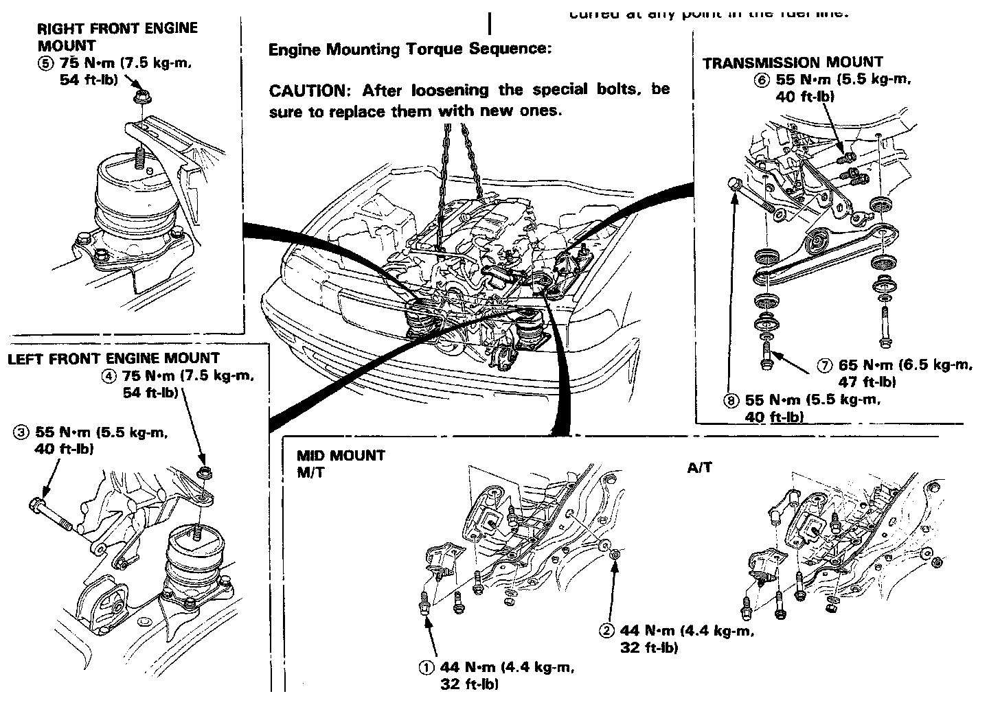
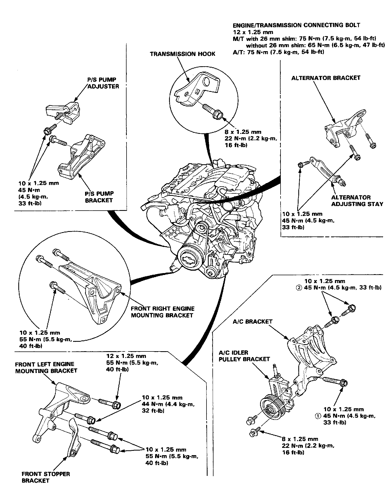

Installation
Installation48. Install the engine in the reverse order of removal.
NOTE:
- If engine block and/or differential case are replaced, the 26 mmshim must be adjusted. Manual Transmission/Transaxle
- Fill the opening of the drive pinion and extension shaft with Super High Temp Urea Grease (P/N 08798-9002) and apply the same Grease to the splines before installing the transmission.
- After service, reconnect power to the radio and turn it on, the word "CODE" will be displayed. Enter the customer's 5-digit code to restore radio operation.
After the engine is in place:
- Torque the engine mounting bolts in sequence shown below.
CAUTION: Failure to tighten the bolts in the proper sequence can cause excessive noise and vibration, and reduce bushing life; check that the bushings are not twisted or offset.
- Check that the spring clip on the end of each driveshaft clicks into place.
CAUTION: Use new spring clips on installation.
- Bleed air from the cooling system at the bleed bolt with the heater valve open.
- Adjust the throttle cable tension.
- Check the clutch pedal free play.
- Check that the transmission shifts into gear smoothly.
- Adjust the tension of the following drive belts.
Alternator belt. Drive Belts, Mounts, Brackets and Accessories
Power steering belt.
Air conditioner belt.
- Clean battery posts and cable terminals with sandpaper, assemble, then apply grease to prevent corrosion.
- Inspect for fuel leakage.
- After assembling fuel line parts, turn on the ignition switch (Do not operate the starter) so that the fuel pump is operated for approximately two seconds and the fuel is pressurized. Repeat this operation two or three times and check whether any fuel leakage has occurred at any point in the fuel line.

Engine Mounting Torque Sequence:
CAUTION: After loosening the special bolts, be sure to replace them with new ones.

Mount and Bracket Bolts/Nuts Torque Value Specifications:

Additional Torque Value Specifications:
NOTE: For manifold replacement Intake Manifold Exhaust System
NOTE: When installing the A/C bracket, tighten the bolts on the oil pan first, then those on the engine block.